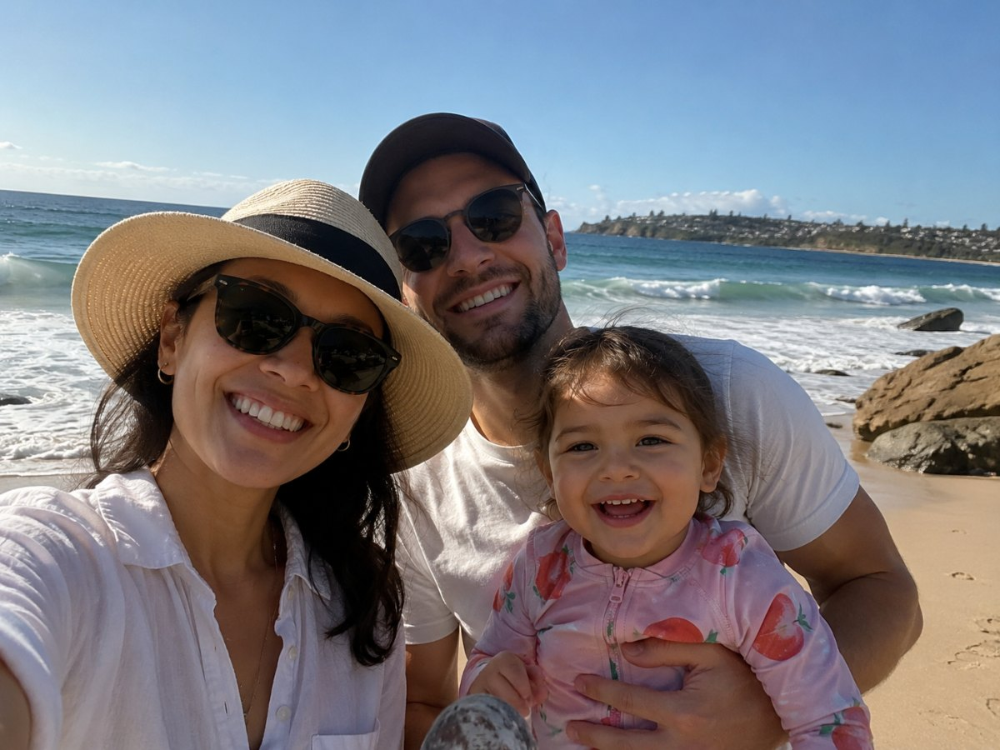

Is Australia right
for me and my family?
Before the visas and job offers, the bigger question: could you build a good life here? A look at the joys and the trade-offs.
Turn this guide into your own checklist
This guide covers everything about moving to Australia. Answer two questions, where you’re considering, and who’s moving, and we’ll build the checklist that applies to your household, with your ticks and notes saved in your browser.
This is a life decision first, and a career decision second
Almost everyone we work with starts here, long before registration or jobs: wondering whether life could be bigger somewhere with more sun, more space and more time. Clinicians come to us from the UK, South Africa, Ireland, the UAE and beyond, and the first question is always the same human one.
So let’s take the pressure off. You don’t need to decide anything today. The goal of this first step is to help you picture the life honestly: what a normal week might feel like, what your children’s days could look like, what you’d gain, and what you’d be leaving behind. The clearer that picture, the easier every decision after it becomes.
At Ethicare, we always say the same thing: the people who settle best are the ones who moved with their eyes open. They knew why they were coming, and they knew what they were trading. That’s all this step is really about.
The things people tell us mattered most
Few people move to Australia for the salary alone. These are the things healthcare professionals say they were weighing up, and the things they value most once they’ve arrived.
Sun & the outdoors
Warm weather and a coastline woven into everyday life, not just the holidays. For many, the early swim, the weekend at the beach and the long light evenings become the parts of the week they protect most.
A good place to raise a family
Safe communities, strong schools and easy access to parks, sport and the outdoors are, again and again, the reasons families decide to stay. Childhood here tends to involve a lot of being outside.
Room to grow
A large, modern health system across public and private care, with genuine room to develop, specialise and move. The scale of the country means real choice over where and how you work.
One country, many lives
From a harbour city to a regional town, a national registration that travels with you means you can change pace or place without starting your paperwork over.
Cost of living, told straight
Australia isn’t a cheap country, and housing in Sydney and Melbourne is the part that surprises people most. Pay is fair, but it pays to plan around real numbers rather than hope.
Community & welcome
Australia is one of the most multicultural countries on earth, so most newcomers find a community that already feels familiar, and colleagues and neighbours who fold them in quickly.
A decision for the whole family
With a partner or children this is not your decision alone, and the families who settle best tend to be the ones who made it together. The questions worth talking through early, around your own kitchen table.
Your partner’s work & world
Will they be able to work here, and would they want to? Many partner and skilled visas allow open work rights. Just as important is whether they’ll find their own footing: friends, purpose, a routine that’s theirs.
Your children, at their age
A four-year-old and a fourteen-year-old experience a move very differently. Younger children usually settle fast; teenagers may need more time and more say. Schooling is generally welcoming and easy to access.
The people you’d leave
Distance from grandparents and old friends is the hardest part for most families, and it’s worth naming honestly. It doesn’t have to be a dealbreaker, but it should be part of the conversation, not a surprise later.

I won’t pretend an international move is a fairy tale. There are days the distance from home is hard, and it’s right to weigh that honestly. But what I’d say to anyone considering Australia is this: don’t wait to feel completely certain, because nobody does. Picture the ordinary days, not just the highlights, the school run, the weekend, the quiet Tuesday, and ask whether that life feels like yours. If it does, the rest is just steps, and you won’t be taking them alone.
SophieCEO & Founder, Ethicare Resourcing
The trade-offs worth knowing
A move this big always costs something. None of these are reasons not to come, but knowing them now is how you avoid being caught off guard later.
It’s a long way from home
Flights back are long and not cheap. For close families, the distance is the thing that takes most getting used to. Plan for how you’ll stay connected.
Big-city housing is expensive
Especially in Sydney and Melbourne. Rent and house prices surprise many newcomers, so it’s worth modelling your real budget before you fall in love with a postcode.
You’re starting over, socially
New colleagues, new systems, new admin. Most people find their feet within a few months, but the first stretch asks for patience and a bit of courage.
The paperwork takes time
Registration, skills assessment and visas take time to line up. It’s all very doable, it just rewards starting early and not rushing the big decisions.
What often surprises people
The things newcomers mention again and again: observations, not sales pitches.
How much you’re outdoors
The coast, the parks and the climate mean being outside becomes a normal part of the week, not a special occasion.
How big the country is
States are vast and varied, a move interstate can feel like a different country, which is part of the appeal.
How multicultural it is
Most newcomers find an established community from home already here, which makes the early months far easier.
How team-based care feels
A relatively flat, collaborative culture of practice, it takes a little adjustment, and most people come to value it.
How to tell if this might be your move
There’s no scorecard, and no right answer. But after years of these conversations, a few honest patterns tend to show up.
This could be a good fit if…
- You want warmth, the outdoors and a lifestyle around the work.
- You’d value a large, modern health system with room to grow.
- You’re open to a fresh start and a bit of early uncertainty.
- Your partner is part of the dream, not just along for it.
- You like the idea of real choice over where in the country you live.
It may not be the right time if…
- Being close to ageing parents is non-negotiable right now.
- You’d struggle with the cost of housing in a major city.
- A teenager at a decisive stage isn’t ready, and can’t be brought along.
- You’re hoping the move alone will fix something at home.
- You need certainty before you can take any first step.
The things people ask us first
Will my partner be able to work?
In many cases, yes. Partners on skilled and many employer-sponsored visas are often eligible to work, frequently with open work rights. The bigger question is usually about their world rather than their visa, finding their own purpose and people. We’re happy to talk through what’s possible for your situation, and Home Affairs sets out each partner’s work rights in full.
Will my children settle?
Most do, and often faster than their parents. Australian schools are generally welcoming to new arrivals, and a childhood here involves a lot of outdoor time and sport, which helps children find their feet. Younger children tend to settle within weeks; teenagers usually need more time and more involvement in the decision.
Is it expensive to live there?
It’s honest to say Australia isn’t cheap, and housing in Sydney and Melbourne is the part that surprises people most. That said, pay is fair and many families find the trade (more sun, space and time for a different kind of life) is exactly what they were after. We’d always encourage planning around real numbers, which the cost-of-living and destination guides will help with.
How far is it really from home?
Far. There’s no softening that. Long-haul flights and the cost of them are the genuine downside for close families. Many people manage it well with planned trips home and regular calls, but it’s worth being clear-eyed about before you decide, rather than discovering it afterwards.
Do I need to decide now?
Not at all. This first step is just about exploring honestly. Plenty of people sit with it for months, talk it over as a family, and only then start looking at the practical side. When you’re ready, the next steps are clear, and you won’t be working through them alone.
Read a little deeper
Ready to explore what this could look like?
You don’t need to have all the answers today. Whether you’re seriously considering the move or curious about whether it could work for your family, we’re glad to talk it through. Honest advice, practical guidance, and no obligation, wherever you are in your thinking.
Ethicare Resourcing · your guide to a life and career in Australia.